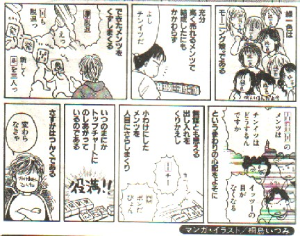

（２１）緑一色
よく「緑一色には必要でしょうか？」という質問を受ける。実は緑一色における
様々な古代ゲームが取捨融合され、駒札１３６枚を使用するゲームとして麻雀が誕生したのは今から約１４０年前、すなわち１８６０年前後と推測されている。とはいえすべての古代ゲーム同様、麻雀も大衆の中から自然発生的に誕生してきたゲームなので、当時のルール表など確固たる資料は存在しない。
麻雀学の創始者である故・榛原茂樹氏が１８８０年前後の原始中国ルールを考証し、1930年（Ｓ５年）、月刊「ファンシー」創刊号誌上に発表した。これを想定寧波規則と称する。いうまでもなくこの榛原氏の考証は、多くの中国古文献を礎にしたもので、信頼度は極めて高いと評価されている。
この想定寧波規則には、地和（半満貫）・天和（満貫）・三元和（満貫）・四喜和(満貫）・十三幺九（満貫）・十三不搭（満貫）・九連宝燈（満貫)の記載はあるが、緑一色の記載はない。
＊想定寧波規則では、混一色は一翻、清一色は三翻。
当時の満貫は800点、これは四翻相当の得点であった。しかし断幺（タンヤオ）、対々（トイトイ）などの一翻/二翻役が無かったため、役の組み合わせによる四翻満貫はあり得なかった。もちろん混一色と清一色が重複することはあり得ないので、満貫点を取得できたのはいわゆる役満貫だけであった。
１９世紀後半、欧米の列強が中国に進出し、やがて上海に治外法権地区を作った。これを上海租界と称する。20世紀になって、この租界、特にアメリカ租界、イギリス租界で麻雀が大流行した。
1920年(Ｔ９年)、アメリカ人、ジョセフ.Ｐ.パブコックが「The Fantastic Game Mah-Jongg」という英文入門書を刊行した（自分の発売した麻雀牌セットに付けて頒布した）※。
※表紙が赤みがかっていたので、通称「Red Book」。このRed Bookの序文には「本書記載のルールが(上海租界における)外国人社交クラブやアメリカやイギリス本国の麻雀団体でも標準ルールとして採用された」とある。
このRed Bookの満貫役には、想定寧波規則記載の役の他、四槓子・四暗刻・字一色・清老頭が記載されている。おそらくこれらの役は天和、大三元よりは後発であったものの、20世紀早々には（中国麻雀で）成立していたと推測される。しかし依然としても緑一色に関する記載はない。
＊同じく混一色は一翻、清一色は三翻。
1923年、イギリスの出版社よりLONDON、NEW YORK 同時発売で「How To Play Mah-Jong（JEAN BRAY著）」という書物が刊行された。この書のＰ.140に初めて緑一色（ALL GREEN）の記載がある(同時期に刊行された他の入門書にも記載があるかもしれないが....)。
この「How To Play Mah-Jong」には「
以上の結果により、次のことが推測される。
(1)緑一色の成立は１９２０年前後らしい。
(2)役の成立は中国麻雀ではなく、上海租界における麻雀、即ち欧米人が関与している可能性が強い。
では、どうしてこの様な役が上海租界における欧米人の間で採用されるに至ったのか。残念ながら理由は判然としていない。しかしあえて推論すれば、欧米人にとってGREENには「良い」という意味があるという。
そういえば信号も「青は進め」。聞くところによれば、人類初の月着陸船を乗せたアポロ11号が月へ向かう時、ヒューストンの最後の言葉は「ALL GREEN! LET'S GO!」だったとか？。こんなところから、このような役が採用されたのかも知れない。というような状況から、緑一色は1920年前後に上海租界における欧米人の手によって採用され始めた可能性が強いとは言える。では中国麻雀にこのような役が無かったのかと云えば、役の成立年代等がハッキリしていないが、紅一点（ホンイーテン）というローカル役がある（1970年、香港、創基出版「麻雀之王」）。
これはと
の組み合わせによるもので、
この役名は中国、北宋の神宗(1067〜1085在位)の時代、宰相まで勤めた大詩人、王安石の「柘榴詩」、「万緑叢中(ばんりょくそうちゅう)、一点(いってん)紅(くれない)なり。 人を動かすに、春色(しゅんしょく)、多くを須(もち)いず」に由来すると言われる。
「万緑叢中、一点紅なり」であるから、ひょっとしたら上海租界の欧米人も、GREENはGOODという考え方の背景から、紅一点の
緑一色が紅一点から変化したのか、紅一点とは全く関係なく創案されたものであるかは別にしても、緑一色と漢詩は関係ない。となれば、もう原初の中国麻雀においてはは、一翻役は混一色しか存在しなかった（少し後期になってくると混老頭などが一翻役として採用されてくる）。すなわち当時の麻雀で手役をつくってアガるというのは至難であった。
そして当時の満貫は現在の役満貫、清一色は現行の倍満くらいに相当した。そして当時の混一色の一翻は、現在の５千点くらいに相当した。すなわち次のようなアガリは、緑一色という役が存在しなければ現在の得点に換算して４、５千点のアガリだったわけである。
ン
＊当時はまだ対々和は一翻役ではなく、符役(符がもらえるだけの役)。すなわち大正中期、日本へ麻雀が伝来した。他役とくらべ、緑一色は比較的遅く伝来したが、当然、ほんらい満貫とは支払いの限度額であったもであるが、一般麻雀では跳満・倍満・三倍満・四倍満、はなはだしきは８倍満（ダブル役満）などが登場してきた。このような風潮のなかで、（Ａ）がただの跳満で、（Ｂ）が役満貫(四倍満)では、たとえ「決め」とはいえ何となく釈然としない。（Ａ） （Ｂ）また清一色の価値が相対的に激減したことによって、「清一色のアガリであれば、いまさら役満にしなくっても十分」という感覚が失われた。すなわち段階的満貫の登場によって以上のような経過をへて、現在ほとんどのルールで
（Ｂ）また清一色の価値が相対的に激減したことによって、「清一色のアガリであれば、いまさら役満にしなくっても十分」という感覚が失われた。すなわち段階的満貫の登場によって以上のような経過をへて、現在ほとんどのルールで